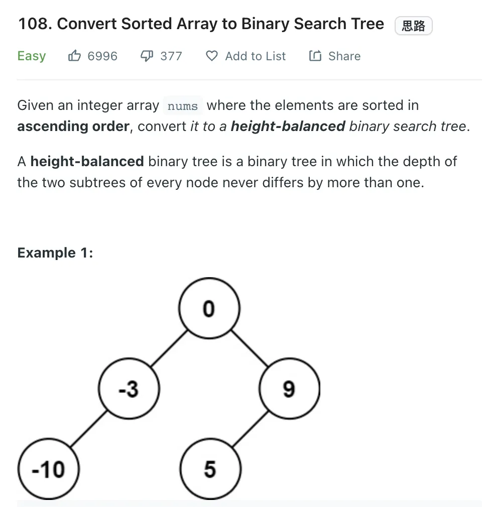
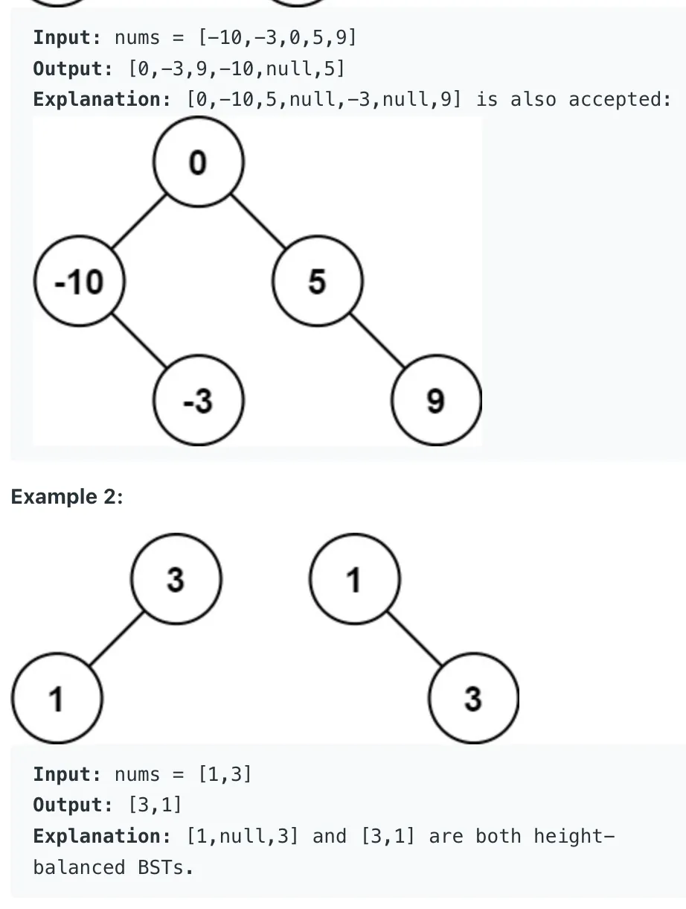
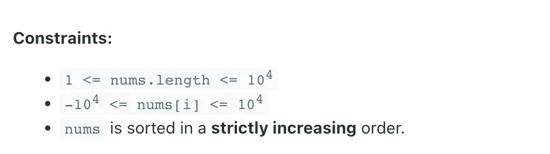

108. Convert Sorted Array to Binary Search Tree
考過的公司：Asked by: Amazon, Bytedance
Question



✍🏽 My Solution
Solution #1 [Recursive-Preorder Traversal]
Runtime: 0 ms, faster than 100.00% of Java online submissions for Convert Sorted Array to Binary Search Tree.
Memory Usage: 43.9 MB, less than 38.14% of Java online submissions for Convert Sorted Array to Binary Search Tree.
class Solution {
public TreeNode sortedArrayToBST(int[] nums) {
return build(nums, 0, nums.length - 1);
}
// 将闭区间 [left, right] 中的元素转化成 BST，返回根节点
TreeNode build(int[] nums, int left, int right) {
if (left > right) {
// 区间为空
return null;
}
// 构造根节点
// BST 节点左小右大，中间的元素就是根节点
int mid = left + (right - left) / 2;
TreeNode root = new TreeNode(nums[mid]);
// 递归构建左子树
root.left = build(nums, left, mid - 1);
// 递归构造右子树
root.right = build(nums, mid + 1, right);
return root;
}
}
Explanation (in my words)
- How does their solution work?
- 平衡二叉树，既然要做到平衡，我们只要把根节点选为数组的中点即可。找到了根节点，然后把数组一分为二，进入递归即可。
- BST的中序遍历是升序的，因此本题等同于根据中序遍历的序列恢复二叉搜索树。因题目要求构造一棵「高度平衡」的树，所以我们在选取节点时选择数组的中点作为根节点，以此来保证平衡性。以该元素左边的升序序列构建左子树，以该元素右边的升序序列构建右子树，这样得到的树就是一棵二叉搜索树啦～ 又因为本题要求高度平衡，因此我们需要选择升序序列的中间元素作为根节点奥～
- 為什麼中间的元素就是根节点
0 1 2 3 4 5 6
-10,-5,-3,0,5,8,9 ⇒left + (right - left) / 2; ⇒0 + (6-0) / 2 = 3
- What is the space/time complexity of their solution?
- O(N), O(logN)